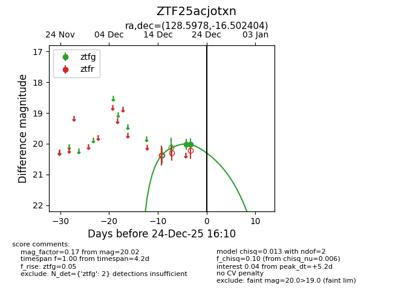
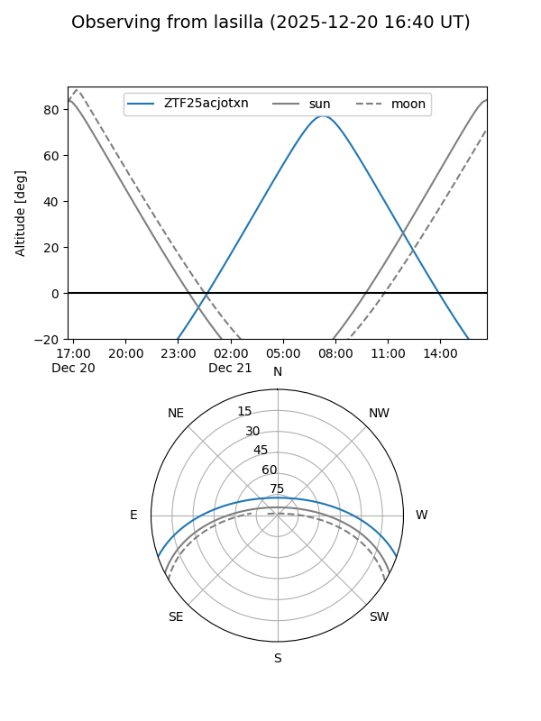
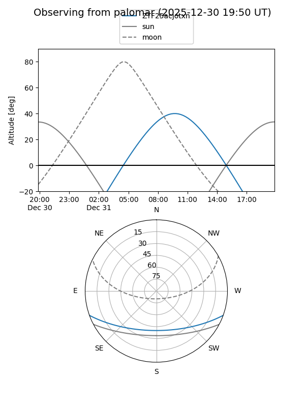
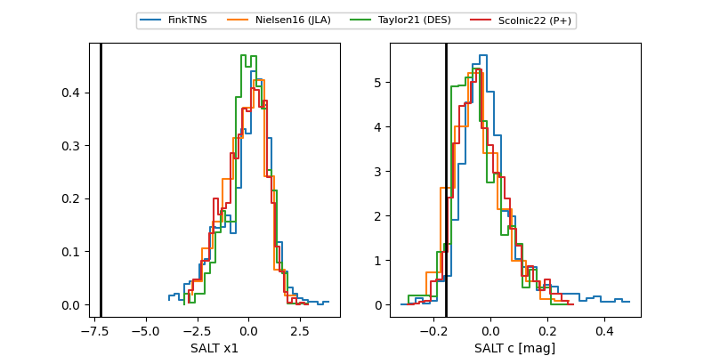

ZTF25acjotxn
Target ZTF25acjotxn at 2025-12-20 12:54
Aliases and brokers:
FINK: fink-portal.org/ZTF25acjotxn
Lasair: lasair-ztf.lsst.ac.uk/objects/ZTF25acjotxn
ALeRCE: alerce.online/object/ZTF25acjotxn
alt names
ZTF25acjotxn (ztf,fink_ztf)
Coordinates:
equatorial (ra, dec) = 128.5978,-16.50240
equatorial (HMS+DMS) = 08:34:23.48,-16:30:08.66
galactic (l, b) = (240.0686,+13.94813)
Flags:
Photometry:
last ztfg=20.02
1 ztfg detections
Lightcurve

Visibility


Additional plots
